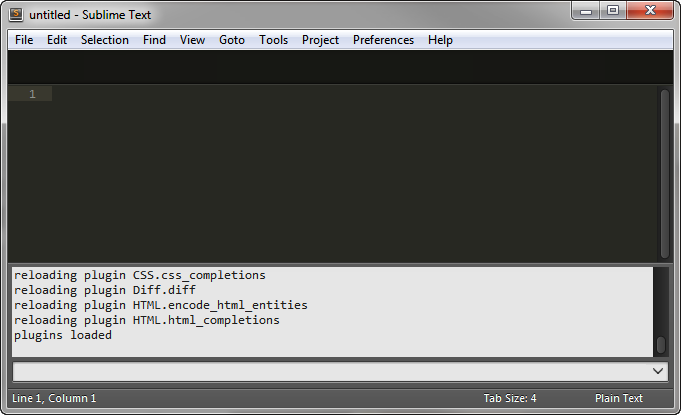
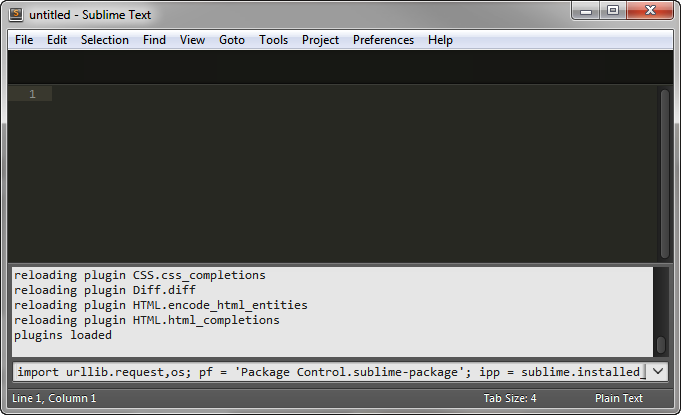
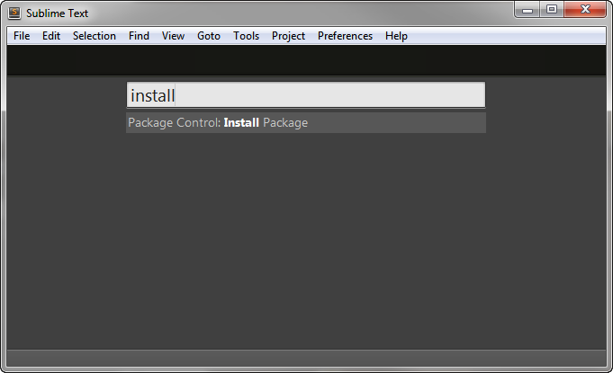
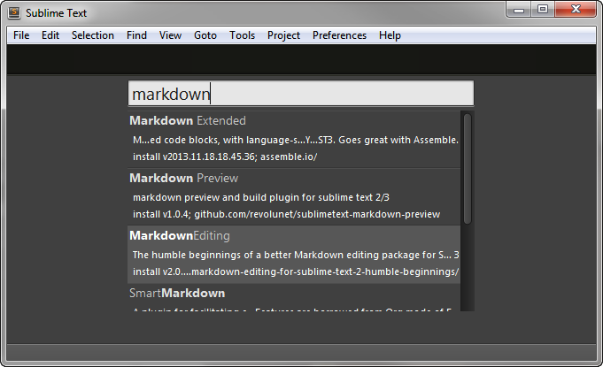
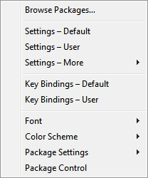
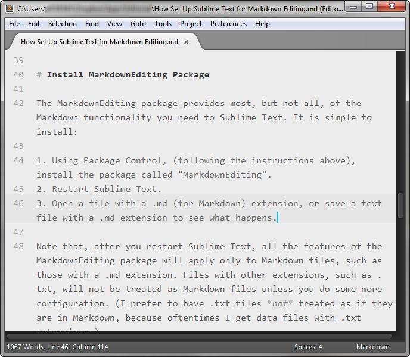
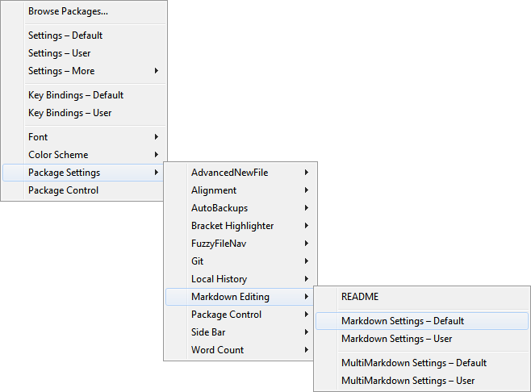
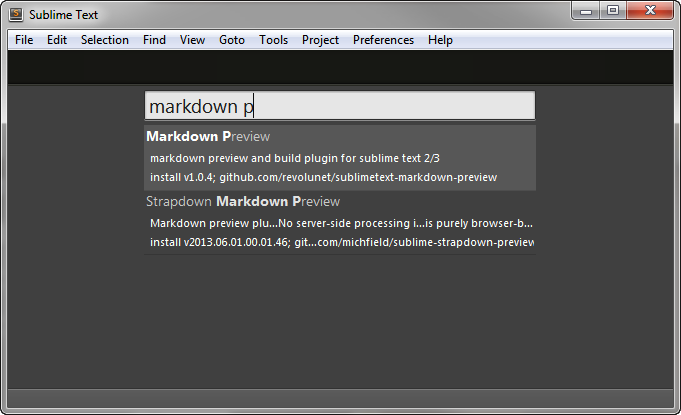

How To Set Up Sublime Text for Markdown Editing
Freshly installed, Sublime Text doesn't offer any specific Markdown support—no syntax highlighting, no special italic or bold formatting, no keyboard shortcuts, and no HTML preview or output. You can add a fantastic Markdown editing theme, inline preview (almost like WYSIWYG), keyboard shortcuts, list autocompletion, in-browser preview, and many more features. You have to install a few packages and configure a few preference files to set everything up. To the new user, how to do this is completely mystifying, which is why I will walk through the whole process below.
How to install packages
First, install Package Control, the Sublime Text package manager
There is an easy-to-use package installer, but it is not immediately obvious how to install it, or even how to use it if you are a Sublime Text novice. You have to: pull up the Python console (either type ``control+``` or click through the menus View > Show Console), paste in some Python script, and execute it (follow the installation instructions here).
Step 1: The Python console in Sublime Text.

Step 2: Sublime Text's console with the Package Control installation command in it. Press enter at this point, the restart Sublime Text when the script is done.

(If you never heard of Python, don't know what Python is, and don't know what a console is for that matter, don't worry. This is the only time you have to reach into the world that only software developers call home.)
How to install a package using Package Control
After installing Package Control, you can install a package with a simple process:
Type
control+shift+ptop open the Command Palette.
Start typing "
install". As you type, the Command Palette filters down commands to those containing the characters you type.
Select the command "Package Control: Install" and press
enter.After a moment, the Command Palette will be filled with package names.
Start typing the name of the package you want to install, or a keyword such as "markdown" to list all packages with the keyword in their names.
Select the package you want (with the arrow keys), press
enter, and the package will be downloaded and installed.
Close and restart Sublime Text for the newly installed package to be activated.
How to configure packages
The way Sublime Text handles preferences (including package settings) is unique and powerful. It is also one of the most complex preference systems I have ever seen.
All of Sublime Text's preferences are written in JSON files that open in the editor itself. JSON files are very easy to read. Comments are prefaced with double-slashes (//), and the preferences are just name-value pairs, separated by commas. The format is easy to follow, and the default settings files are very well documented with comments that explain what each setting does. I use the built-in Find command (control+f) to search for whatever settings I want to tweak.
Sublime Text, plus every plugin, project, and syntax type have their own settings files. This allows you to make the editor look and work completely differently for different types of text files. This is essential for supporting multiple programming languages, and works the same way for plaintext (.txt files) and Markdown (.md). On Windows, you access Sublime Text's settings files under the Preferences menu.

Not only are there many different places for settings, there are also two files for each setting type. There is a "default" settings file, and a "user" settings file that overrides the default. You should only makes changes to the "user" settings files, because the default settings files can/will get overwritten if you update Sublime Text or its plugins. You have to learn to look up the preference you want in the "default" settings file, then enter your preferences in the corresponding "user" settings files. If you don't do so, you will lose your settings when the plugin auto-updates.
Preferences apply in a cascading manner, with general preferences (such as Sublime Text's global settings) being overridden by more specific settings (such as project settings, then syntax-specific settings), with "user" settings always overriding "default" settings. What you end up with are settings being pulled from a multitude of files (mostly from the default files that come with the editor or the packages you install, with some key overrides coming from from the user settings files that you write), based on the document you are working on.
Install the MarkdownEditing package
The "MarkdownEditing" package provides most, but not all, of the Markdown functionality you need to Sublime Text. It is simple to install:
Using Package Control, (following the instructions above), install the package called "MarkdownEditing". Those steps would be:
- Type control+shift+p to call up the Command Palette.
- Type "install" and hit
enter. Wait for the package list to appear. Type "markdown", hit the arrow keys a couple times to select "MarkdownEditing", and hit
enter.
Restart Sublime Text.
Open a file with a .md (for Markdown) extension, or save a text file with a .md extension to see what happens.

Note that, after you restart Sublime Text, all the features of the MarkdownEditing package will apply only to Markdown files, such as those with a .md extension. Files with other extensions, such as .txt, will not be treated as Markdown files unless you do some more configuration. (I prefer to have .txt files not treated as if they are in Markdown, because oftentimes I work with data files with .txt extensions.)
MarkdownEditing features
The MarkdownEditing packages installs an eye-pleasing gray-on-gray theme for Markdown files in the editor. More importantly, it provides inline formatting of Markdown. That means the editor bolds headings and shows bold and italic for words wrapped in * or _ characters. Sections marked off for block quotes and source code will be shaded differently, too. It will also intelligently handle bullet lists and numbered lists, which can save a lot of typing. On top of that, Sublime Text will double quotations, parentheses, underscores, and asterisks, too, to help make sure you close them as you type.
In addition, MarkdownEditing package enables the following helpful keyboard shortcuts:
- Heading tags (
#) can be auto-populated, on both blank lines and on selected text, by pressingcontrol+1,control+2, and so on, all the way up tocontrol+6. - To bold or italicize some words, just select the text and type
*(or_) once or twice; your selection will be surrounded with asterisks (or underscores) on both sides. (As of version 2.0.0 of the MarkdownEditing package,control+bandcontrol+ialso bold and italicize text. If you prefer usingcontrol+bto build your Markdown files), you will have to overridecontrol+bin your user key bindings file.
Configure fonts for Markdown editing in the packages user settings file
My preferred font on Windows for writing is Consolas (Ubuntu Mono runs a close second). I set this font for Markdown editing by editing the user preferences file that belongs to the EditingMarkdown package. You can open this file by going through the menus: Preferences > Package Settings > Markdown Editing > Markdown settings &endash; Default.

The initial user settings file will be blank. Here is my file. Note that you must keep to this format (called JSON), with all the curly braces, quotation marks, and so on.
{
"font_face": "Consolas",
"font_size": 12,
"save_on_focus_lost": true,
"line_numbers": true
}The first two preferences I set in my user settings for Markdown files set the font face (that's the font name) and the font size. The third setting, "save_on_focus_lost", causes Sublime Text to automatically save the file when I switch (alt+tab) to another application. The last setting ensures that I have line numbers in the left gutter, which is a personal preference of mine.
Install the Markdown Preview package
Sublime Text can't offer a true live preview of Markdown, like Markdown Pad does. This is not too big a limitation, though, because live preview becomes much less important once you are comfortable with Markdown syntax. You can, however, preview Markdown in an external browser by installing the "Markdown Preview" package.
Using Package Control, (following the instructions above), install the package called "Markdown Preview". That would be:
- Type
control+shift+pto call up the Command Palette - Type "
install" and hitenter. Wait for the package list to appear. Type "
markdown preview", hit the arrow keys a couple times to select "Markdown Preview", and hitenter.
- Type
Edit your "Key Bindings - User" file by using the menu items: Preferences > Key Bindings - User (or use the Command Palette).
Add the following entry to your "Key Bindings - User" file. If you have other key bindings in your file, be sure there are commas between them.
{ "keys": ["alt+m"], "command": "markdown_preview", "args": {"target": "browser", "parser":"markdown"} }(Optional) If you want to use
control+bfor the build command, instead of the MarkdownEditing bold command, add the following entry to your "Key Bindings - User" file. If you have other key bindings in your file, be sure there are commas between them.{ "keys": ["ctrl+b"], "command": "build" }Save the key bindings file.
When working on a Markdown file, type
alt+mto generate an HTML preview of your document that will open in your default browser. (You can also call the Markdown Preview command using the Command Palette. You hitcontrol+shift+pto call up the Command Palette, then type "Preview", select "Markdown Preview: Python Markdown: Preview in Browser", and hitenter.)